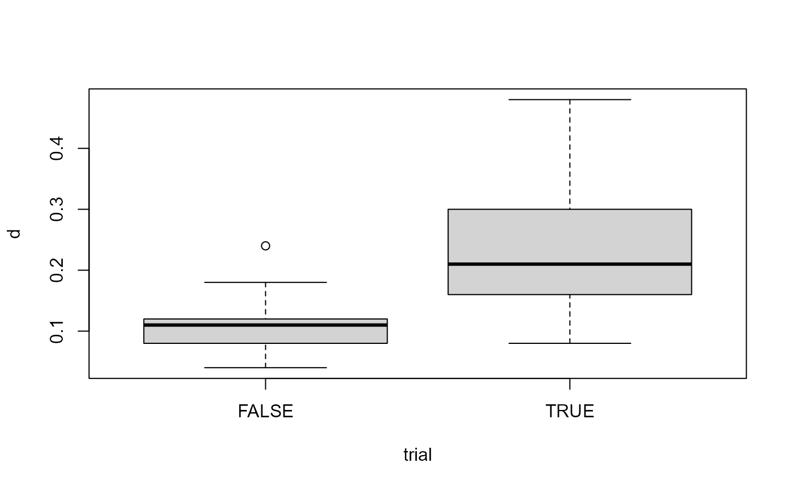
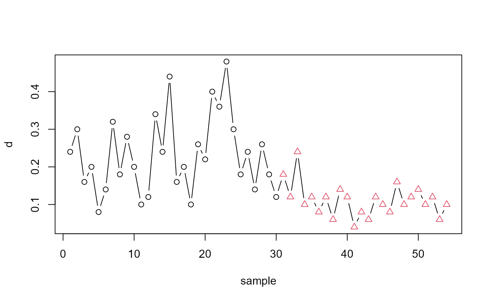

Frozen orange juice concentrate is packed in 6-oz cardboard cans. These cans are formed on a machine by spinning them from cardboard stock and attaching a metal bottom panel. A can is then inspected to determine whether, when filled, the liquid could possible leak either on the side seam or around the bottom joint. If this occurs a can is considered nonconforming. The data were collected as 30 samples of 50 cans each at half-hour intervals over a three-shift period in which the machine was in continuous operation. From sample 15 used, a new bacth of cardboard stock was punt into production. Sample 23 was obtained when an inexperienced operator was temporarily assigned to the machine. After the first 30 samples, a machine adjustment was made. Then further 24 samples were taken from the process.
Format
A data frame with 54 observations on the following 4 variables:
- sample
Sample ID
- D
Number of defectives
- size
Sample sizes
- trial
Trial samples (TRUE/FALSE)
References
Montgomery, D.C. (1991) Introduction to Statistical Quality Control, 2nd ed, New York, John Wiley & Sons, pp. 152--155.
Examples
data(orangejuice)
orangejuice$d <- orangejuice$D/orangejuice$size
attach(orangejuice)
summary(orangejuice)
#> D sample size trial d
#> Min. : 2.000 Min. : 1.00 Min. :50 Mode :logical Min. :0.0400
#> 1st Qu.: 5.000 1st Qu.:14.25 1st Qu.:50 FALSE:24 1st Qu.:0.1000
#> Median : 7.000 Median :27.50 Median :50 TRUE :30 Median :0.1400
#> Mean : 8.889 Mean :27.50 Mean :50 Mean :0.1778
#> 3rd Qu.:12.000 3rd Qu.:40.75 3rd Qu.:50 3rd Qu.:0.2400
#> Max. :24.000 Max. :54.00 Max. :50 Max. :0.4800
boxplot(d ~ trial)

mark <- ifelse(trial, 1, 2)
plot(sample, d, type="b", col=mark, pch=mark)
